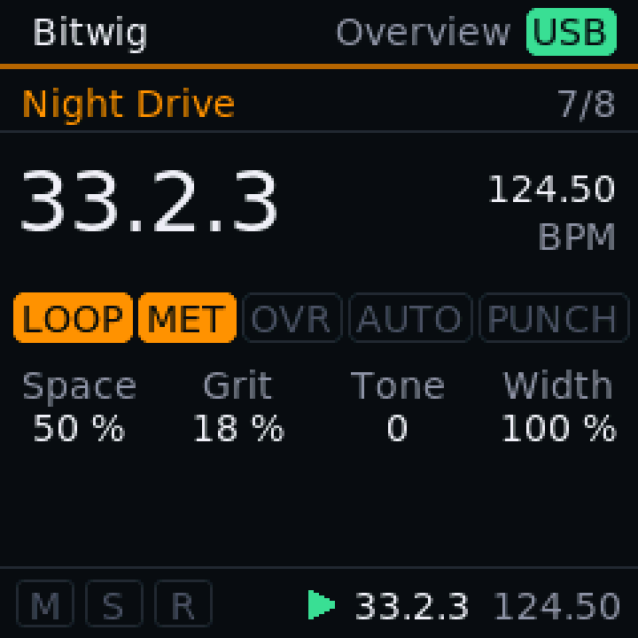

DAW manual · Bitwig · Views
11 Overview
The view for arranging and recording: a big tempo and play position, the state of loop, metronome, overdub, automation and punch, and knobs for the project-wide controls, so you can run a take without the mouse.
Download the Bitwig PDF PDF, 0.5 MB
Getting there
Tap SEQ until the status bar reads Overview (Device → Mixer → Overview). One more tap goes back to Device.
What the screen shows

- Tempo in large digits, and the position as bar.beat.sixteenth.
- The project name, the time signature, and the transport: PLAY, REC or STOP.
- Chips, lit while on: LOOP, MET (metronome), OVR (overdub), AUTO (automation write), PUNCH.
- Knob cells for the knobs: K1-K8 or, on Knob Bank B, K9-K16.
- The selected track's colour as a thin line along the bottom.
The controls
| Control | In the Overview |
|---|---|
| K1-K8 | The project's remote controls (Bitwig's project-wide macros) |
| K9 | Tempo: 1 BPM per click (0.1 with Oct- or the Shift pad held) |
| K10 | Shuffle amount (Bitwig's groove) |
| K11 | Metronome volume |
| K12 | Loop start, one bar per click (a quarter note with the modifier) |
| K13 | Loop length, one bar per click (a quarter note with the modifier) |
| K14 | Play position, one bar per click (a quarter note with the modifier) |
| K15 | nothing |
| K16 | Master volume |
| Left / Right | Play position one bar back / forward |
| Oct- + Left / Right | Four bars back / forward |
Transport, pads and faders work as everywhere (see Controls that work in every view).
Project remote controls
K1-K8 reach Bitwig's project remote controls: eight macros that belong to the whole project, not to a track. Map them in Bitwig's project remote-controls panel to anything you want within reach during a take: a master filter, a reverb size, a global "intensity". Unmapped controls show as empty cells.
Good to know
- The position updates up to ten times a second while Bitwig plays.
- The time signature is read from the project. Loop and position steps follow it: in 7/8 a "bar" is seven eighth notes.